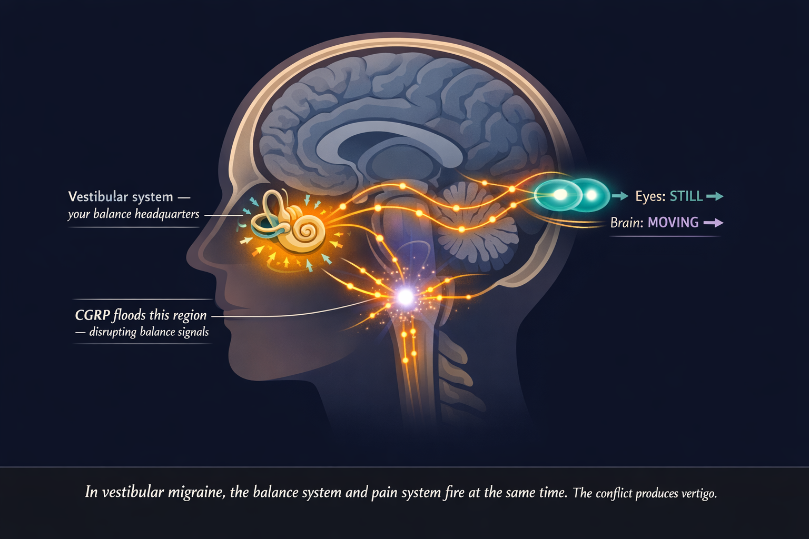
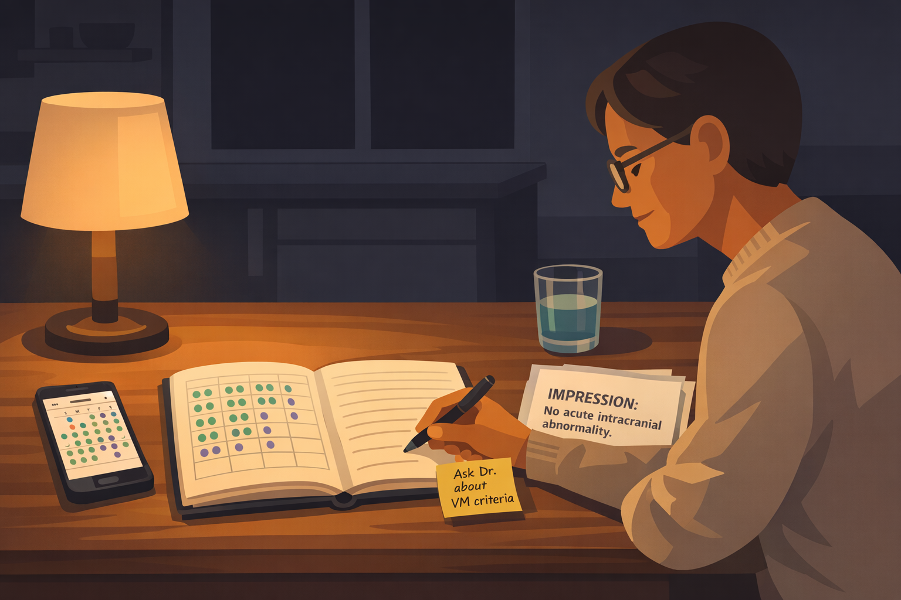

By Rustam Iuldashov
30 years lived experience with migraine | Sources: 25 peer-reviewed references including Brain, Neurology, Cephalalgia, Headache, Curr Opin Neurol, Laryngoscope, Otol Neurotol, Front Neurol, Curr Pain Headache Rep | Last updated: March 2026
Medical Review: This content is based on 25 peer-reviewed sources including Brain, Neurology, Cephalalgia, Headache, Current Opinion in Neurology, Laryngoscope, Otolaryngology–Head and Neck Surgery, Frontiers in Neurology, and other authoritative journals.
Important Notice: This article is for informational purposes only and does not replace professional medical advice. Always consult a healthcare professional before starting or changing any treatment.
Key Takeaways
- Vestibular migraine is the most common cause of spontaneous episodic vertigo — affecting roughly 2.7% of adults, but correctly diagnosed in only 10% of those who qualify [1]
- Up to 50% of vestibular migraine attacks occur without headache — which is precisely why the connection to migraine is so consistently missed [5]
- The diagnosis is clinical, not scan-based: a normal MRI is not a failure — it is confirmation that the problem is neurological and consistent with vestibular migraine [4]
- CGRP floods the vestibular nucleus during attacks, disrupting balance signal processing — the same neuropeptide now targeted by the newest migraine therapies [9]
- Vestibular migraine can trigger PPPD — a chronic dizziness syndrome where avoidance behavior makes symptoms worse, not better [11]
- Trigger management, vestibular rehabilitation, and migraine prevention medication form the three pillars of management — no single pillar works reliably alone [4]
- Galcanezumab (INVESTMENT trial, 2024) showed significant reduction in vestibular migraine disability versus placebo — CGRP therapies are now the frontier for refractory VM [14]
- Dietary changes require a 4–8 month commitment to show meaningful results — not two weeks
The Migraine That Doesn’t Hurt
You’re standing in the grocery store when it begins.
The shelves tilt. The fluorescent lights pulse. The movement of other shoppers — people who seem to have no idea the floor is shifting — makes your stomach drop, and suddenly you’re gripping the cart with both hands like it’s the only solid thing left.
No headache. Just the world quietly refusing to hold still.
You go home. You lie down. You search your symptoms and get sent down rabbit holes: inner ear damage, anxiety, stroke warning signs, Ménière’s disease. Over the next year, you see an ENT (normal). A neurologist (normal MRI). A cardiologist (normal heart). You are tested thoroughly. You are told you are fine. You are not fine.
Then — finally, often years into the search — someone says two words that change everything: vestibular migraine.
Only 10% of people who meet the clinical criteria for vestibular migraine are ever correctly told that migraine is the cause of their dizziness. [1] That number is not a rounding error. It’s a systemic failure. This guide exists to help you close that gap — to understand exactly what vestibular migraine is, how it works, how to get a real diagnosis, and what you can actually do to take your life back.
The Most Common Cause of Vertigo You’ve Never Heard Of
Vestibular migraine is a form of migraine in which the primary symptom is a disruption of balance, spatial orientation, and motion perception — not necessarily head pain. The vestibular system, housed in your inner ear and brainstem, is responsible for your sense of position in space, your ability to track moving objects, and the feeling that the ground is solid beneath you. When migraine pathways disrupt that system, the result is vertigo, dizziness, or a persistent sense of rocking, swaying, or tilting. [2]
Here’s the fact that shocks most people who receive this diagnosis: vestibular migraine is now recognized as the most common cause of spontaneous episodic vertigo — more common than Ménière’s disease, more common than vestibular neuritis. [2] It affects an estimated 1–3% of the general population and up to 10% of all patients in dizziness clinics. [3] It is not rare. It is everywhere. It is simply unrecognized.
The International Headache Society and the Bárány Society jointly established the diagnostic criteria in 2012. To qualify for a diagnosis of vestibular migraine, you need all of the following:
Bárány Society Diagnostic Criteria — Vestibular Migraine
- At least five episodes of vestibular symptoms — vertigo, dizziness, visual motion sensitivity, or positional imbalance — of moderate to severe intensity
- Each episode lasting 5 minutes to 72 hours
- A current or past history of migraine with or without aura
- During at least 50% of episodes, at least one migraine feature: headache, simultaneous photophobia and phonophobia, or visual aura
- No better explanation from another vestibular or neurological diagnosis
That last requirement contains the entire diagnostic challenge. Because in up to 50% of vestibular migraine attacks, no headache appears at all. [5] The migraine system fires. The vestibular system is disrupted. And the only evidence is dizziness — which sends patients to the wrong specialists for years.
Who Gets Vestibular Migraine — and Why
A large U.S. population study found vestibular migraine affects approximately 2.7% of adults — far higher than previous estimates, and almost certainly still an undercount. [1] Women are significantly more affected, with a female-to-male ratio of roughly 3:1, likely due to hormonal influences on the migraine system. [6] The condition peaks in adults under 40, though it strikes at any age.
Family history shapes risk dramatically. The likelihood of vestibular migraine among siblings of affected individuals is 4 to 10 times higher than in the general population, suggesting a strong genetic thread running through many families with unexplained dizziness. [7]
A 2025 study in Neurology, following 2,801 newly diagnosed migraine patients, found that 68.4% reported vestibular symptoms — and 15.2% met full vestibular migraine criteria. [8] Among those with even mild vestibular involvement, disability scores, sleep quality, anxiety levels, and depression scores were all significantly worse than in migraine patients without dizziness. The vestibular system is not a footnote in the migraine story. For many patients, it’s the whole plot.
What’s Actually Happening in the Brain
The mechanism is still being mapped, but the key players are increasingly clear.
CGRP — calcitonin gene-related peptide — is the neuropeptide at the center of modern migraine biology. Researchers have found CGRP receptors not only in the trigeminal pain pathways responsible for headache, but in the vestibular nucleus of the brainstem and in the inner ear itself. [9] When a migraine event unfolds, the CGRP cascade disrupts vestibular signal processing — generating the sensation that the world is moving when it isn’t.
Functional imaging in VM patients shows abnormal activity and connectivity across multiple brain regions, particularly those responsible for multisensory integration and spatial orientation. [9] The brain is receiving conflicting signals. The eyes say “still.” The brainstem says “moving.” Neither wins cleanly. The nauseating confusion of vertigo is the brain failing to reconcile the contradiction.
There’s also evidence of broader sensory amplification. The same mechanism that makes migraine patients hypersensitive to light and sound appears to extend, in VM patients, to motion, visual flow, and postural input. [4] The brain has turned its sensitivity dial up — and the vestibular system is among the first to suffer.

The Diagnosis Journey: How to Stop Being Passed Around
The average path from first vestibular symptom to correct diagnosis spans years. Patients cycle through ENTs ruling out ear disease, neurologists excluding stroke, cardiologists checking for syncope, and — in a pattern that’s as common as it is enraging — mental health referrals when nothing organic is found. [10]
Normal test results are not a dead end — they’re a signpost. A clear MRI doesn’t mean you’re imagining it. It means the problem is neurological, not structural — and vestibular migraine fits that picture exactly.
This point deserves emphasis: if your MRI came back clean, your audiogram was normal, and every specialist said they found nothing, that is not a reason for despair. Vestibular migraine has no specific biomarker, no definitive scan finding. A brain that functions abnormally under migraine conditions looks completely normal between attacks. [4]
When presenting with new vestibular symptoms, you should expect: a brain MRI to exclude structural causes; videonystagmography (VNG) or video head impulse testing; pure tone audiometry to distinguish VM from Ménière’s disease; and caloric testing. Most results will be normal or show only minor non-specific findings in VM — that is expected and consistent with the diagnosis. [4]
Bring a written symptom diary with the date, duration, and character of each episode. Note every accompanying feature — head pressure, ear fullness, tinnitus, light or sound sensitivity, visual disturbance. Include your full migraine history, particularly childhood motion sickness, a known early predictor of VM. List family members with unexplained vertigo or recurrent dizziness.
Then ask, explicitly: “Could this be vestibular migraine?”
It sounds obvious. It is often decisive. Physicians in dizziness clinics don’t routinely screen for migraine features. Migraine specialists don’t routinely ask about vestibular episodes. The question falls between the two specialties — and you may need to be the one who raises it. [10]

⚠️ When Dizziness Becomes a Medical Emergency
Vestibular migraine is not dangerous. But vertigo can occasionally signal a stroke — and the two can look similar in the first minutes. Go to the emergency room immediately if your dizziness comes with any of these:
- A sudden, severe headache unlike any you’ve had before — the “thunderclap” headache
- Difficulty speaking, slurred words, or sudden confusion
- Weakness or numbness in your face, arm, or leg on one side
- Double vision or sudden vision loss
- Severe loss of balance — inability to walk or stand
- A first-ever episode of intense vertigo, especially with cardiovascular risk factors
These are potential stroke warning signs. They require immediate evaluation. When in doubt, go.
The Hidden Danger: How Vestibular Migraine Becomes Chronic Dizziness
Many people with vestibular migraine never just have vestibular migraine. Over time, a significant portion develop Persistent Postural-Perceptual Dizziness (PPPD) — a condition in which daily dizziness continues long after the acute attack has ended.
PPPD emerges when the brain, repeatedly destabilized by vestibular events, shifts into a permanent state of hypervigilance. It never fully relaxes its monitoring of balance and motion. The result: chronic, non-spinning dizziness that worsens with upright posture, physical movement, and visually complex environments — grocery stores, crowds, scrolling screens, escalators. [11] Vestibular migraine is one of the most common triggers for PPPD development, responsible for precipitating chronic dizziness in a substantial proportion of affected patients. [12]
The cruelest feature of PPPD is this: avoidance makes it worse. When you stop going to supermarkets, stop driving, stop walking in busy places — you deprive the vestibular system of the input it needs to recalibrate. Anxiety about dizziness heightens the brain’s monitoring. Heightened monitoring amplifies sensory sensitivity. Amplified sensitivity produces more dizziness. The cycle is self-sustaining. [11]
If this pattern sounds familiar — if you’ve been shrinking your world to prevent attacks — raise it explicitly with your specialist. PPPD requires targeted treatment: vestibular rehabilitation therapy (VRT) designed specifically for habituation, and often cognitive behavioral therapy (CBT) to interrupt avoidance behaviors. The treatment, counterintuitively, involves doing more of what triggers you — in a graduated, controlled way, with professional guidance.
Practical Trigger Management: Finding Your Personal Map
The triggers for vestibular migraine significantly overlap with classic migraine triggers — but some are especially potent for the vestibular system.
High-impact vestibular triggers:
- Sleep disruption — even one poor night lowers the attack threshold for most VM patients
- Skipping meals — blood sugar fluctuations activate the migraine system reliably
- Hormonal shifts — many women notice attacks cluster around menstruation or worsen during perimenopause
- Visual overload — scrolling screens, striped patterns, busy crowds, escalators, flickering lights
- Barometric pressure changes — weather fronts are a consistent and uncontrollable precipitant
- Dehydration — underappreciated, and among the easiest to address
- Caffeine — excess and withdrawal alike
- Stress spikes followed by sudden relaxation — the “weekend attack” pattern is real in VM
The step most patients skip: sorting triggers by controllability. Sleep, hydration, and meal timing are largely in your hands. Weather is not. Directing energy toward controllable triggers first builds a meaningful foundation — even when it doesn’t eliminate attacks entirely. It lowers your baseline neurological excitability, which means the triggers you can’t control become less likely to push you over the edge.
Diet: What Works, What Doesn’t, and What Takes Patience
No randomized controlled trial has proven that dietary changes reduce vestibular migraine frequency. But clinical consensus and strong patient experience consistently support dietary management as part of a broader strategy. [4] Two frameworks are most used.
The Low-Tyramine / Low-Histamine Elimination Diet. Tyramine is an amino acid that accumulates in aged, fermented, and improperly stored foods. It may affect norepinephrine release in ways that activate the trigeminovascular pathway. Key foods to remove initially: aged cheeses (parmesan, cheddar, blue cheese, gouda), red wine and tap beer, fermented products (sauerkraut, kimchi, miso, soy sauce, kombucha), processed and cured meats, leftovers stored more than 48 hours, chocolate, caffeine, artificial sweeteners (especially aspartame), MSG and sulfites in packaged foods.
The tyramine rule most people miss: bacteria produce tyramine as protein ages in the refrigerator — within 24–48 hours of cooking. Freezing individual portions immediately after cooking stops that process entirely. This single habit removes one of the most common hidden triggers without eliminating any food from your diet permanently.
The Mediterranean Migraine Diet is a long-term approach that prioritizes anti-inflammatory eating over strict elimination. Fresh vegetables, olive oil, legumes, whole grains, and fish form the foundation. This works best as a maintenance strategy after you’ve identified your personal triggers through the elimination phase.
The timeline no one warns you about: most VM patients who see meaningful dietary results report needing 4 to 8 months to experience consistent improvement — not two weeks. The dietary approach is not a quick fix. It’s about lowering baseline neurological excitability over months, making every other trigger easier to manage.
Vestibular Rehabilitation Therapy: Retraining a Confused Brain
Vestibular rehabilitation therapy (VRT) is exercise-based physical therapy designed to help the brain recalibrate its processing of vestibular signals. For VM specifically, it targets gaze stabilization, habituation exercises (controlled graduated exposure to movements that provoke mild dizziness), balance training, and visual motion desensitization.
The exercises are designed to produce mild, temporary discomfort. That’s the mechanism. Feeling worse during a session is not a sign of harm — it’s the signal that adaptation is occurring. [4]
Finding the Right Therapist
Not every physiotherapist is trained in vestibular disorders. Ask specifically for a therapist with vestibular rehabilitation certification. Also note: vestibular ocular reflex exercises can temporarily worsen symptoms when migraine is poorly controlled. [12] VRT works best when paired with adequate medical management of the underlying migraine — not instead of it.
Medications: Acute Relief and Prevention
No single medication has been definitively proven in large-scale RCTs specifically for vestibular migraine attacks. What clinicians use in practice for acute attacks: [4] triptans (sumatriptan, rizatriptan) — most useful when taken early; antihistamines (meclizine, promethazine) — effective for acute symptom relief, not suitable for regular use; antiemetics (ondansetron, metoclopramide) for nausea and vomiting; benzodiazepines (diazepam, clonazepam) for short-term crisis management only.
Antihistamines and benzodiazepines quiet the vestibular system in an acute crisis. But used regularly, they actively prevent the brain from adapting and compensating. Long-term use of vestibular suppressants postpones the recalibration that leads to lasting improvement.
Smyth et al., Brain, 2022For prevention, the most commonly used options: [4][17] beta-blockers (propranolol, metoprolol) as a widely used first-line option; venlafaxine (SNRI) proven in one RCT; [13] amitriptyline — particularly effective when sleep disruption is prominent; flunarizine (available in Europe, not the US); topiramate — effective but frequently limited by cognitive side effects; lamotrigine — particularly considered when aura-like features are prominent; and magnesium, riboflavin (B2), CoQ10 as low-risk nutraceuticals with good migraine evidence.
The frontier — CGRP therapies: The INVESTMENT trial (2024) — a placebo-controlled RCT of galcanezumab for vestibular migraine — showed the drug significantly reduced VM disability scores compared to placebo. [14] A 2024 systematic review confirmed that anti-CGRP monoclonal antibodies appear effective for VM, including measurable reductions in vestibular symptom frequency. [15] These therapies are not yet formally approved specifically for vestibular migraine in most countries — but for patients who have failed standard preventives, they are increasingly the next step. Availability varies by country; discuss with your neurologist.
Living in the Real World: Practical Strategies
Grocery stores and visually busy environments. Flickering fluorescents, moving bodies, high-contrast shelf patterns — this is the trifecta of vestibular provocation. Practical approaches: shop early on weekday mornings when stores are quietest; wear lightly tinted sunglasses to reduce light and visual noise indoors; focus your gaze at chest height — on your cart or list — rather than scanning wide; break large trips into smaller ones. Online grocery ordering is not failure. It’s strategy.
Screens. Scrolling is one of the most consistent vestibular triggers. Enable “reduce motion” and dark mode across your devices. Use blue-light filters in the evening. Apply the 20-20-20 rule during screen work: every 20 minutes, look at something 20 feet away for 20 seconds.
Driving. Some VM patients drive without difficulty; for others, the visual flow of the road is intensely destabilizing. Interestingly, driving is sometimes more tolerable than being a passenger — because driving gives active control over the visual environment. Be honest about where you currently are in your symptom cycle.
The traffic light system. Rate your symptom level before any activity: green (proceed normally), amber (attempt with modifications and an exit plan), red (rest, don’t push through). Over time, this builds the self-awareness that prevents the boom-bust cycle of overdoing it on good days, then crashing for days afterward. [20] It also allows gradual expansion of what you can do, rather than a rigid division between possible and impossible.
Key Takeaways
- Vestibular migraine is the most common cause of spontaneous episodic vertigo — affecting roughly 2.7% of adults, but correctly diagnosed in only 10% of those who qualify [1]
- Up to 50% of vestibular migraine attacks occur without headache — which is precisely why the connection to migraine is so consistently missed [5]
- The diagnostic criteria require at least 5 vestibular episodes lasting 5 minutes to 72 hours, a migraine history, and at least one migraine feature in half of episodes — the diagnosis is clinical, not scan-based [4]
- A normal MRI is not a failure — it’s confirmation that the problem is neurological and consistent with vestibular migraine
- Avoidance is the hidden danger: shrinking your world to prevent dizziness can push VM into PPPD — a chronic condition where the treatment requires the opposite: gradual, controlled re-exposure [11]
- CGRP-targeting therapies show real promise for patients who don’t respond to standard prevention [14][15]
- Dietary changes require a 4 to 8 month commitment to show meaningful results — not weeks
- The traffic light system (green / amber / red) is a simple daily framework for navigating activity without triggering crashes or complete withdrawal [20]
⚕️ Important Medical Disclaimer
This article is for informational and educational purposes only and does not constitute medical advice, diagnosis, or treatment. The author, Rustam Iuldashov, is not a licensed physician, neurologist, or healthcare professional. He is a patient advocate with 30 years of personal experience living with chronic migraine.
All clinical claims in this article are sourced from peer-reviewed research published in indexed medical journals. Study designs and sample sizes are noted in the references.
Vestibular migraine shares symptoms with serious conditions including stroke, Ménière’s disease, and vestibular neuritis — all of which require proper medical evaluation. If you are experiencing new, severe, or worsening vestibular symptoms, seek medical attention promptly. Do not use this article to self-diagnose or to modify any existing treatment plan without consulting your doctor.
Medications and therapies mentioned (triptans, CGRP inhibitors, vestibular rehabilitation) require professional prescription and supervision. Dietary changes described are complementary and do not replace medical care.
If you are currently experiencing a vestibular migraine attack: lie down in a quiet, dark room. Avoid screens. Stay hydrated. If this is your first severe episode or you are unsure whether your symptoms are VM or something more serious — seek emergency evaluation.
This content was last reviewed for accuracy in March 2026.
References
- Marcus DA, Bhowmick A, Bhowmick AK. “The epidemiology of vestibular migraine: a population-based survey study.” Otol Neurotol. 2018;39(8):1037–1044. doi:10.1097/MAO.0000000000001900. Study design: Cross-sectional. n=2,490.
- Dieterich M, Obermann M, Celebisoy N. “Vestibular migraine: the most frequent entity of episodic vertigo.” J Neurol. 2016;263(Suppl 1):S82–S89. doi:10.1007/s00415-016-8220-8. Study design: Review.
- Lempert T, Neuhauser H. “Epidemiology of vertigo, migraine and vestibular migraine.” J Neurol. 2009;256(3):333–338. doi:10.1007/s00415-009-0149-2. Study design: Review.
- Smyth D, Britton Z, Murdin L, et al. “Vestibular migraine treatment: a comprehensive practical review.” Brain. 2022;145(11):3741–3754. doi:10.1093/brain/awac264. Study design: Comprehensive review.
- Ceriani CEJ. “Beyond Vertigo: Vestibular, Aural, and Perceptual Symptoms in Vestibular Migraine.” Curr Pain Headache Rep. 2024;28(7):633–639. doi:10.1007/s11916-024-01245-3. Study design: Review.
- Lin YY, et al. “Current Demography and Treatment Strategy of Vestibular Migraine in Neurotologic Perspective.” Otolaryngol Head Neck Surg. 2024. doi:10.1002/ohn.923. Study design: Retrospective cohort. n=1,285.
- Frejo L, et al. “Systematic Review of Prevalence Studies and Familial Aggregation in Vestibular Migraine.” Front Genet. 2020;11:954. doi:10.3389/fgene.2020.00954. Study design: Systematic review. n=31 studies.
- Chen YY, et al. “Prevalence, Clinical Correlates, and Functional Implications of Vestibular Symptoms in Patients With Migraine.” Neurology. 2025. doi:10.1212/WNL.0000000000214248. Study design: Cross-sectional. n=2,801.
- Ceriani CEJ. “Vestibular Migraine Pathophysiology and Treatment: a Narrative Review.” Curr Pain Headache Rep. 2024;28(2):47–54. doi:10.1007/s11916-023-01182-7. Study design: Narrative review.
- Villar-Martinez MD, Goadsby PJ. “Vestibular migraine: an update.” Curr Opin Neurol. 2024;37(3):252–263. doi:10.1097/WCO.0000000000001257. Study design: Narrative review.
- Popkirov S, Staab JP, Stone J. “Persistent postural-perceptual dizziness (PPPD): a common, characteristic and treatable cause of chronic dizziness.” Pract Neurol. 2018;18:5–13. doi:10.1136/practneurol-2017-001809. Study design: Review.
- Abouzari M, et al. “Migraine Features in Patients with Persistent Postural-Perceptual Dizziness.” Otol Neurotol. 2021. PMC8487433. Study design: Cross-sectional. n=36.
- Salviz M, Yuce T, Acar H, et al. “Propranolol and venlafaxine for vestibular migraine prophylaxis: a randomized controlled trial.” Laryngoscope. 2016;126:169–174. doi:10.1002/lary.25032. Study design: RCT. n=60.
- Sharon JD, Krauter R, Chae R, et al. “A placebo controlled, randomized clinical trial of galcanezumab for vestibular migraine: the INVESTMENT study.” Headache. 2024;64:1264–1272. doi:10.1111/head.14792. Study design: Placebo-controlled RCT. n=38.
- Frosolini A, Lovato A. “Monoclonal antibodies targeting CGRP to treat vestibular migraine: a rapid systematic review and meta-analysis.” Indian J Otolaryngol Head Neck Surg. 2024;76:3737–3744. doi:10.1007/s12070-024-04634-7. Study design: Systematic review and meta-analysis.
- Webster KE, Dor A, Galbraith K, et al. “Pharmacological interventions for prophylaxis of vestibular migraine.” Cochrane Database Syst Rev. 2023;(4):CD015187. doi:10.1002/14651858.CD015187.pub2. Study design: Cochrane systematic review.
- Byun YJ, Levy DA, Nguyen SA, et al. “Treatment of vestibular migraine: a systematic review and meta-analysis.” Laryngoscope. 2021;131:186–194. doi:10.1002/lary.28738. Study design: Systematic review and meta-analysis.
- Russo CV, Saccà F, Braca S, et al. “Anti-calcitonin gene-related peptide monoclonal antibodies for the treatment of vestibular migraine: a prospective observational cohort study.” Cephalalgia. 2023;43:3331024231161809. doi:10.1177/03331024231161809. Study design: Prospective cohort. n=50.
- Mallampalli MP, Rizk HG, Kheradmand A, et al. “Care gaps and recommendations in vestibular migraine: an expert panel summit.” Front Neurol. 2021;12:812678. doi:10.3389/fneur.2021.812678. Study design: Expert consensus panel.
- Vestibular Disorders Association. “You Are Not Your Diagnosis: Living Well with Chronic Vestibular Conditions.” VeDA Life Rebalanced Conference. 2025. vestibular.org.
- Moreno-Ajona D, et al. “Persistent postural-perceptual dizziness versus vestibular migraine: a narrative review.” J Neurol. 2025. doi:10.1002/ana.27028. Study design: Narrative review.
- “Effect of vestibular rehabilitation therapy in patients with persistent postural perceptual dizziness: a systematic review and meta-analysis.” Front Neurol. 2025. PMC12504085. Study design: Systematic review and meta-analysis.
- Kang BC, Kim T, Kwon JK. “Prevalence of vestibular migraine in an otolaryngologic clinic.” J Vestib Res. 2023;33:137–142. doi:10.3233/VES-210162. Study design: Cross-sectional.
- Chu H, et al. “Prophylactic treatments for vestibular migraine: a systematic review and network meta-analysis of randomized clinical trials.” 2025. doi:10.1097/j.pain.0000000000003527. Study design: Network meta-analysis.
- Iljazi A, Ashina H, Lipton RB, et al. “Dizziness and vertigo during the prodromal phase and headache phase of migraine: a systematic review and meta-analysis.” Cephalalgia. 2020;40(10):1095–1103. doi:10.1177/0333102420938784. Study design: Systematic review and meta-analysis.

How We Create Content
- Peer-reviewed sources only. We cite research from Brain, Neurology, Cephalalgia, Headache, Current Opinion in Neurology, Laryngoscope, Otolaryngology–Head and Neck Surgery, Frontiers in Neurology, Frontiers in Genetics, Current Pain and Headache Reports, Practical Neurology, and other authoritative journals.
- Large-sample evidence prioritized. Key claims reference a population study of 2,490 adults, a cross-sectional study of 2,801 migraine patients, and a meta-analysis confirming the CGRP-vestibular nucleus pathway.
- RCT and systematic review evidence highlighted. The INVESTMENT trial (RCT, galcanezumab), propranolol vs venlafaxine RCT, and Cochrane review of VM prophylaxis are all cited with study design and sample size.
- Source transparency. All 25 references are numbered and verifiable. DOI links provided where available.
- Regular updates. We review articles when significant new research emerges. Next scheduled review: September 2026.
- No conflicts of interest. We receive no funding from pharmaceutical companies, supplement manufacturers, or any commercial entity with interest in migraine treatment.
Track Vertigo, Dizziness, and Triggers Together
Migraine Companion helps you log vestibular episodes, headache-free attacks, visual triggers, sleep, and diet — so the patterns in your vestibular migraine become visible. Built by someone who has navigated this condition for 30 years.
Last reviewed: March 2026
Next scheduled review: September 2026